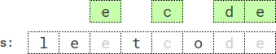

| Category | Difficulty | Likes | Dislikes |
|---|---|---|---|
| Algorithms | Hard | 510 | 15 |
string | stack | greedy | monotonic-stack
deutsche-bank
You are given a string s, an integer k, a letter letter, and an integer repetition.
Return the lexicographically smallest subsequence of s of length k that has the letter letter appear at least repetition times. The test cases are generated so that the letter appears in s at least repetition times.
A subsequence is a string that can be derived from another string by deleting some or no characters without changing the order of the remaining characters.
A string a is lexicographically smaller than a string b if in the first position where a and b differ, string a has a letter that appears earlier in the alphabet than the corresponding letter in b.
Example 1:
Input: s = "leet", k = 3, letter = "e", repetition = 1
Output: "eet"
Explanation: There are four subsequences of length 3 that have the letter 'e' appear at least 1 time:
- "lee" (from "leet")
- "let" (from "leet")
- "let" (from "leet")
- "eet" (from "leet")
The lexicographically smallest subsequence among them is "eet".Example 2:

Input: s = "leetcode", k = 4, letter = "e", repetition = 2
Output: "ecde"
Explanation: "ecde" is the lexicographically smallest subsequence of length 4 that has the letter "e" appear at least 2 times.Example 3:
Input: s = "bb", k = 2, letter = "b", repetition = 2
Output: "bb"
Explanation: "bb" is the only subsequence of length 2 that has the letter "b" appear at least 2 times.
Constraints:
1 <= repetition <= k <= s.length <= 5 * 104s consists of lowercase English letters.letter is a lowercase English letter, and appears in s at least repetition times.